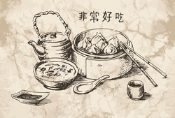

A comida chinesa conquista o seu espaço no gosto dos brasileitos e em setembro de 1975, o Restaurante Dorioente mudou para a principal rua da cidade, a Rua 20 de novembro 346. Fazia sentido também, mudar o seu nome, e assim, nasceu o Restaurante Chinês.
Prezamos por:
- Organização
- Atenção
- Cuidado
- Satisfação
A nosso história é semelhante a outros tantos mas a nossa comida é única e inigualável.